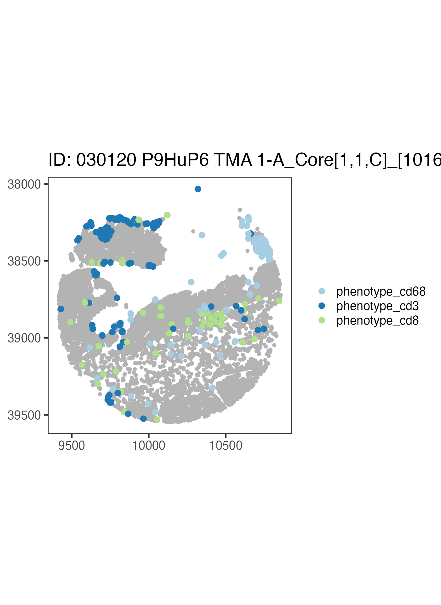
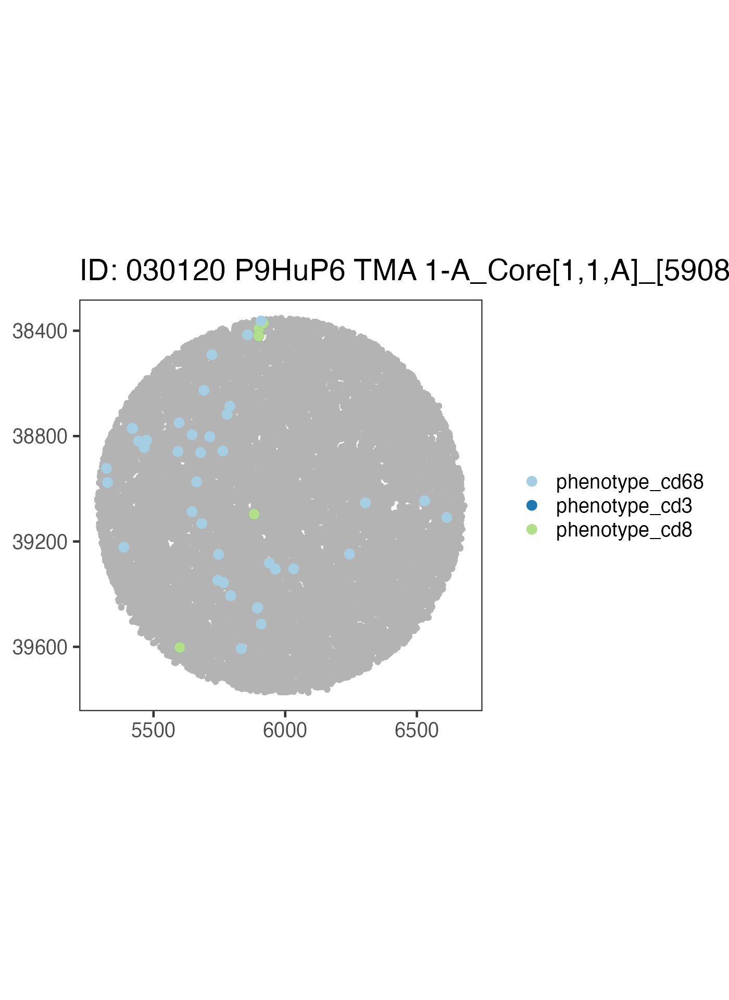
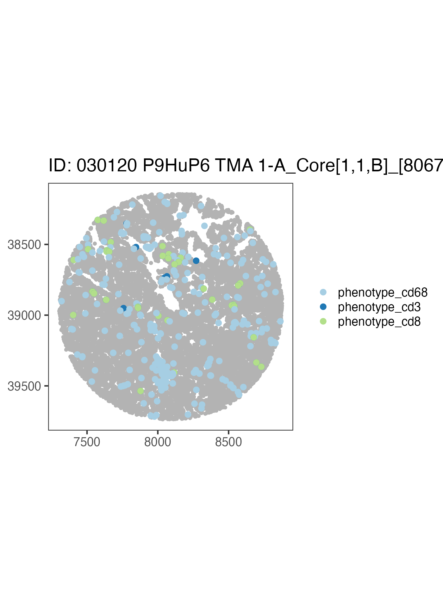
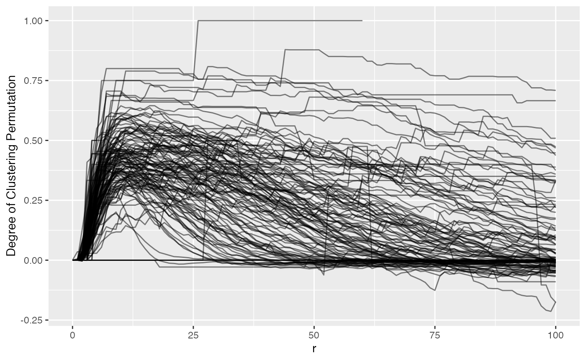
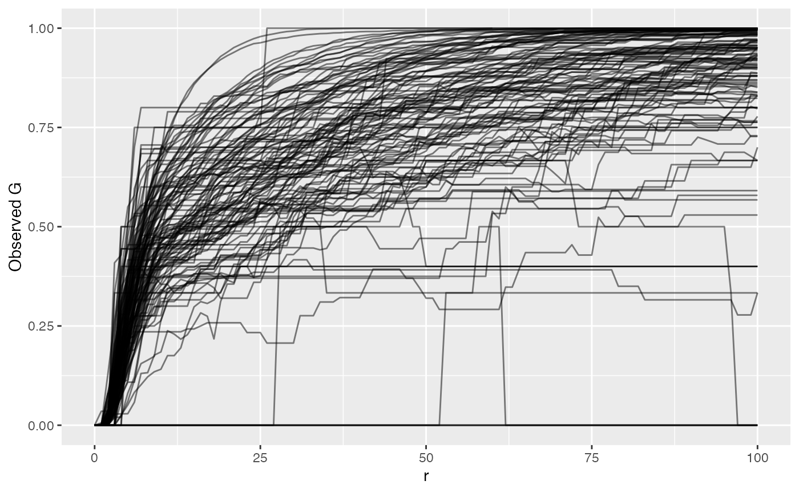
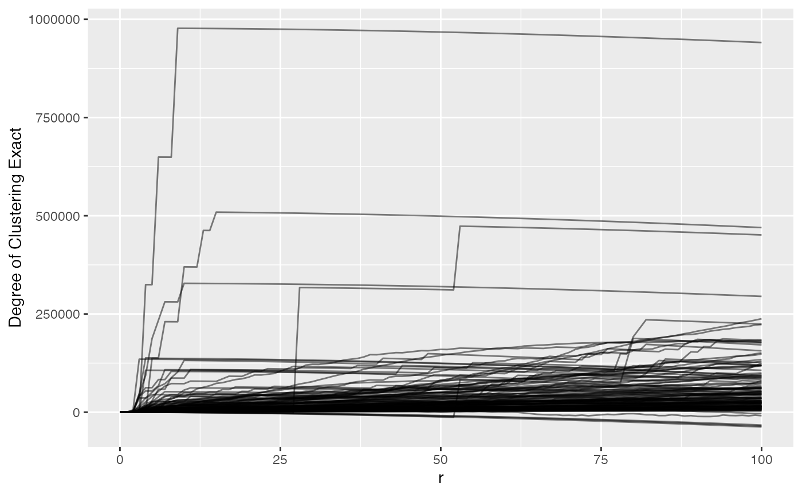

Using SpatialExperiment objects with spatialTIME
Source:vignettes/spatialexperiment.Rmd
spatialexperiment.RmdMultiplex single-cell imaging datasets
We’ll be using data from the VectraPolarisData Bioconductor package (Wrobel, J and Ghosh, T, 2022). This provides two datasets from the Vectra Polaris imaging system in the form of SpatialExperiment objects. See this vignette for more details.
These are the packages needed to run this tutorial. These will only be installed if they are not found in the installed packages.
if (!("devtools" %in% installed.packages())) {
install.packages("devtools")
}
if (!("spatialTIME" %in% installed.packages())) {
devtools::install_github("FridleyLab/spatialTIME", ref = "feature-alex")
}
if (!("BiocManager" %in% installed.packages())) {
install.packages("BiocManager")
}
if (!("VectraPolarisData" %in% installed.packages())) {
BiocManager::install("VectraPolarisData")
}
if (!("survival" %in% installed.packages())) {
BiocManager::install("survival")
}
if (!("lmtest" %in% installed.packages())) {
install.packages("lmtest")
}We’ll need to load these packages. This just means these packages will be made readily available to us.
##
## Attaching package: 'dplyr'## The following objects are masked from 'package:stats':
##
## filter, lag## The following objects are masked from 'package:base':
##
## intersect, setdiff, setequal, union## spatialTIME version:
## 1.4.0
## If using for publication, please cite our manuscript:
## https://doi.org/10.1093/bioinformatics/btab757About the data
In this example we will be using data from a human ovarian cancer study (Steinhart et al, 2021).
# Ovarian cancer example
ovarian <- VectraPolarisData::HumanOvarianCancerVP()## Warning: package 'SingleCellExperiment' was built under R version 4.4.2## Warning: package 'MatrixGenerics' was built under R version 4.4.2## Warning: package 'IRanges' was built under R version 4.4.2## Warning: package 'GenomeInfoDb' was built under R version 4.4.2## see ?VectraPolarisData and browseVignettes('VectraPolarisData') for documentation## loading from cacheFor more details on the SpatialExperiment class see this
Bioconductor
Vignette and preprint.
We can inspect what this type of object looks like typically by printing it out below:
# Use this code chunk to explore the ovarian object.The colData entry has a lot of our marker information as
well as other annotations. Let’s specifically look at the
sample_id and some of the markers we will be using.
This is how we look at the colData in this set.
colData(ovarian)[1:5, 1:5]## DataFrame with 5 rows and 5 columns
## cell_id tissue_category slide_id nucleus_area_square_microns
## <numeric> <character> <character> <numeric>
## 1 1 Stroma 030120 P9HuP6 TMA 1-B 9.4
## 2 2 Tumor 030120 P9HuP6 TMA 1-B 11.1
## 3 3 Stroma 030120 P9HuP6 TMA 1-B 8.9
## 4 4 Stroma 030120 P9HuP6 TMA 1-B 9.8
## 5 5 Stroma 030120 P9HuP6 TMA 1-B 12.1
## nucleus_area_percent
## <numeric>
## 1 0
## 2 0
## 3 0
## 4 0
## 5 0We can look at the sample IDs by doing this:
# this is how we can extract sample IDs
head(ovarian$sample_id)## [1] "030120 P9HuP6 TMA 1-B_Core[1,1,D]_[12124,35348].im3"
## [2] "030120 P9HuP6 TMA 1-B_Core[1,1,D]_[12124,35348].im3"
## [3] "030120 P9HuP6 TMA 1-B_Core[1,1,D]_[12124,35348].im3"
## [4] "030120 P9HuP6 TMA 1-B_Core[1,1,D]_[12124,35348].im3"
## [5] "030120 P9HuP6 TMA 1-B_Core[1,1,D]_[12124,35348].im3"
## [6] "030120 P9HuP6 TMA 1-B_Core[1,1,D]_[12124,35348].im3"There are also marker columns we will need for plotting. They all
start with phenotype_
head(ovarian$phenotype_cd19)## [1] "" "" "" "CD19-" "CD19-" "CD19-"Now to use these data with the spatialTIME package for analyses we
will need to convert it to the MIF (multiplex immunofluorescence)
format. For SpatialExperiment objects specifically we can do this using
the spatial_exp_to_mif() function. For all other types of
data you can use the create_mif() function.
There are three required arguments in this function to create our mif
object. 1) The SpatialExperiment object we are using. 2)
The name of the column that links the colData with the spatialCoord
data. In this case it is called “sample_id”. 3) The names of the columns
that contain any markers we’d like to use for the analysis or plotting
that are included in the data as column names.
# These are the genes we will be using as markers that exist in these data.
markers <- c("phenotype_cd68", "phenotype_cd3", "phenotype_cd8")These objects come with so many columns of data that spatialTIME
doesn’t need, so many will be dropped from the object. But if there is a
particular column you will need for labeling purposes, you can name it
in the cols_to_keep variable. But using this argument is
optional rather than required.
Now we can pass all of this into the spatial_exp_to_mif
function to create our mif object for use with
spatialTIME.
ova_mif <- spatial_exp_to_mif(
spatial_exp = ovarian,
patient_id = "sample_id",
markers = markers,
cols_to_keep = "tissue_category"
)Plot it
Now we can use our mif object to make a set of
immunofluorescence plots, one for each sample in the set.
ova_mif <- plot_immunoflo(ova_mif,
plot_title = "sample_id",
mnames = markers,
xloc = "x",
yloc = "y"
)We can view individual plots by pulling them out using the indexing
notation. Where [[1]] would be the first sample in the list
and [[3]], the third sample in the list, etc.
ova_mif$derived$spatial_plots[[3]] +
ggplot2::coord_equal()
Now let’s write our own code to take a look at a different sample using the above code as a reference.
ova_mif$derived$spatial_plots[[1]] +
ggplot2::coord_equal()
ova_mif$derived$spatial_plots[[2]] +
ggplot2::coord_equal()
We could build on to this plot using ggplot2 and
tidyverse code.
Subset mIF to Single Compartment
We can subset our mif object to a certain compartment. Note this is
why when we made our object we used
cols_to_keep = "tissue_category" because we are using that
labeling now.
# filter the mif object to be only the tumor compartment
ova_mif_tumor <- subset_mif(ova_mif,
classifier = "tissue_category",
level = "Tumor",
markers = markers
)Now that we have subset to tumor only, let’s check a spatial data
frame for what levels are in tissue_category
# check a spatial data frame for levels in tissue_category
ova_mif_tumor$spatial[[1]]$tissue_category %>% unique()## [1] "Tumor"Success! We only have cells in a tumor compartment. Summary of the samples has also been updated to reflect the new compartment.
names(ova_mif_tumor$sample)## [1] "patient_id" "sample_id"
## [3] "Tumor: phenotype_cd68" "Tumor: phenotype_cd3"
## [5] "Tumor: phenotype_cd8" "Tumor: Total Cells"
## [7] "Tumor: % phenotype_cd68" "Tumor: % phenotype_cd3"
## [9] "Tumor: % phenotype_cd8"END OF OFFICIAL INSTRUCTION
Ripley’s K
Now we can use the Ripley’s K stat to quantify our spatial clustering.
# takes time to process all samples
ova_mif_tumor <- ripleys_k(ova_mif_tumor,
mnames = markers,
r_range = 0:100,
edge_correction = "translation", # translational edge correction
permute = FALSE, # allows for exact estimation of complete spatial ransomness, or CSR
workers = 1, # depending on number of spatial samples and ram, may cause crashes if overallocated
big = 50000, # really only needed (keep larger than largest spatial data) when computer has ram limitations otherwise would avoid, causes non-perfect estimation of CSR due to rounding/edge corrections
xloc = "x",
yloc = "y",
overwrite = TRUE
)## Warning: 1 point was rejected as lying outside the specified window## Warning: data contain duplicated points## Warning: 1 point was rejected as lying outside the specified window## Warning: data contain duplicated pointsNow that we’ve run Ripley’s K, let’s plot phenotype_cd3
to view t-cell clustering
ova_mif_tumor$derived$univariate_Count %>%
filter(Marker == "phenotype_cd3") %>%
ggplot() +
geom_line(aes(x = r, y = `Degree of Clustering Exact`,
group = sample_id),
alpha = 0.5
)## Warning: Removed 202 rows containing missing values or values outside the scale range
## (`geom_line()`).
We can see that most samples have a positive ‘degree of clustering’ meaning that the T cells in the most samples are clustering closer together than expected if they were randomly distributed around the samples. We also see that there are 202 rows that have missing values, i.e. the spatial files didn’t have enough positive cells for a marker.
Nearest Neighbor G
Alternatively we can use Nearest Neighbor G to examine clustering which identifies the probability of encountering a neighbor cell.
ova_mif_tumor <- NN_G(
mif = ova_mif_tumor,
mnames = markers,
r_range = 0:100,
num_permutations = 10, # NN G(r) requires permutations to estimate CSR
edge_correction = "rs", # reduced sampling edge correction
keep_perm_dis = FALSE, # whether to keep results from each permutation
workers = 1,
overwrite = TRUE,
xloc = "x",
yloc = "y"
)## Warning: 1 point was rejected as lying outside the specified window## Warning: data contain duplicated points## Warning: 1 point was rejected as lying outside the specified window## Warning: data contain duplicated pointsNow let’s plot phenotype_cd3 again but with NNG results
to view t-cell clustering.
ova_mif_tumor$derived$univariate_NN %>%
filter(Marker == "phenotype_cd3") %>%
ggplot() +
geom_line(aes(x = r, y = `Degree of Clustering Permutation`, group = sample_id),
alpha = 0.5
)## Warning: Removed 242 rows containing missing values or values outside the scale range
## (`geom_line()`).
We can see NN G(r) is much more ‘curvy’ than Ripley’s K. Values above 0 suggest clustering more than expected if the T cells were random. We also can vaguely see that there is a bit of a hill between 0 and 25, indicating tight clusters of CD3, then outside of that they either fall to 0 or maintain their degree of clustering. NN G(r) (observed) tells the proportion of T cells with a neighbor at or below a measured radius.
ova_mif_tumor$derived$univariate_NN %>%
filter(Marker == "phenotype_cd3") %>%
ggplot() +
geom_line(aes(x = r, y = `Observed G`, group = sample_id),
alpha = 0.5
)## Warning: Removed 242 rows containing missing values or values outside the scale range
## (`geom_line()`).
By plotting the raw NN G(r) value, we see that it grows and approaches 1, at which point all T cells in the sample have another T cell within that radius. Or 75% of T cells have another T cell within whatever radius. The reason we take the difference between observed and permuted (Degree of Clustering Permutation) is to account for sample-specific technical artifacts like holes or even necrotic regions that violate what Ripley’s K and NN G assume of the sample. This difference is then what we compare between samples.
Picking a Radius - Ripley’s K
Unless diving into complicated statistics with functional data analysis (analysis of the entire shape of the Ripley’s K or NN G curve), researchers have to pick a radius that they would like to associate with some feature of the samples like patient survival, stage, treatment response, or even disease subtypes.
The best way to do this is to plot all curves for a marker and find a radius that’s small enough to be biologically meaningful while large enough to capture variance in the data.
Let’s plot phenotype_cd3 to view t-cell clustering again to take a look.
ova_mif_tumor$derived$univariate_Count %>%
filter(Marker == "phenotype_cd3") %>%
ggplot() +
geom_line(aes(x = r, y = `Degree of Clustering Exact`, group = sample_id),
alpha = 0.5
)## Warning: Removed 202 rows containing missing values or values outside the scale range
## (`geom_line()`).
For this data, we might pick a radius of 50 pixels because after that most values don’t drastically change, so we can subset and move forward.
analysis_dat <- ova_mif_tumor$derived$univariate_Count %>%
filter(Marker == "phenotype_cd3", r == 50) %>% # filter ripley's k output to CD3 cells and radius of 50
full_join(
ova_mif_tumor$clinical, # merge with clinical (on left side)
., by = c("patient_id" = "sample_id")) # ripleys k on right
head(analysis_dat)## patient_id tma
## 1 030120 P9HuP6 TMA 1-B_Core[1,1,D]_[12124,35348].im3 1
## 2 030120 P9HuP6 TMA 1-B_Core[1,1,E]_[14220,35348].im3 1
## 3 030120 P9HuP6 TMA 1-B_Core[1,1,F]_[16379,35348].im3 1
## 4 030120 P9HuP6 TMA 1-B_Core[1,1,G]_[18601,35348].im3 1
## 5 030120 P9HuP6 TMA 1-B_Core[1,1,H]_[20633,35348].im3 1
## 6 030120 P9HuP6 TMA 1-B_Core[1,1,B]_[7934,35665].im3 1
## diagnosis primary
## 1 Recurrent primary peritoneal carcinoma 0
## 2 Papillary serous adenocarcinoma of ovarian surface 1
## 3 serous adenocarcinoma 1
## 4 Primary peritoneal carcinoma 1
## 5 Post-Treatment High grade serous carcinoma of the peritoneum 1
## 6 High grade serous carcinoma 1
## recurrent treatment_effect stage grade survival_time death BRCA_mutation
## 1 1 0 3 3 68 1 1
## 2 0 0 3 3 37 1 0
## 3 0 0 3 3 76 0 0
## 4 0 0 3 3 22 1 NA
## 5 0 1 4 3 70 0 0
## 6 0 0 3 2 46 0 0
## age_at_diagnosis time_to_recurrence parpi_inhibitor debulking iter
## 1 47 25 Y Optimal Estimater
## 2 53 20 Y Optimal Estimater
## 3 53 No_Recurrence Y Interval Estimater
## 4 54 9 N Optimal Estimater
## 5 50 31 N Interval Estimater
## 6 69 39 Y Optimal Estimater
## Marker r Theoretical CSR Observed K Permuted CSR Exact CSR
## 1 phenotype_cd3 50 7853.982 29017.89 NA 10651.873
## 2 phenotype_cd3 50 7853.982 52929.95 NA 10014.605
## 3 phenotype_cd3 50 7853.982 13699.08 NA 8085.531
## 4 phenotype_cd3 50 7853.982 137283.93 NA 12436.604
## 5 phenotype_cd3 50 7853.982 20728.65 NA 11713.179
## 6 phenotype_cd3 50 7853.982 135060.12 NA 11249.827
## Degree of Clustering Permutation Degree of Clustering Theoretical
## 1 NA 21163.906
## 2 NA 45075.972
## 3 NA 5845.099
## 4 NA 129429.946
## 5 NA 12874.672
## 6 NA 127206.141
## Degree of Clustering Exact Run
## 1 18366.015 1
## 2 42915.348 1
## 3 5613.550 1
## 4 124847.324 1
## 5 9015.475 1
## 6 123810.296 1Performing Association with Survival
For simplicity we can dichotomize the clustering values.
analysis_dat <- analysis_dat %>%
mutate(
cluster_group = ifelse(`Degree of Clustering Exact` >= median(`Degree of Clustering Exact`, na.rm = TRUE), # remembering that 2 samples didn't have enough T cells so remove NA
"High Clustering",
"Low Clustering"
), # if above the median, high, else low
cluster_group = factor(cluster_group, levels = c("Low Clustering", "High Clustering"))
) %>% # convert to factor to control reference
filter(!is.na(cluster_group)) # must remove extra rows that do not have clustering groupCreate a formula using column names in
analysis_data.
form1 <- formula(Surv(survival_time, as.numeric(death)) ~ age_at_diagnosis + stage + grade + cluster_group)Now let’s fit the model using Cox proportional hazards regression
model using the survival package.
# fit the model with the data
model1 <- coxph(form1, data = analysis_dat)We can take a look at the summary of this fitting.
# view the fit
summary(model1)## Call:
## coxph(formula = form1, data = analysis_dat)
##
## n= 126, number of events= 79
##
## coef exp(coef) se(coef) z Pr(>|z|)
## age_at_diagnosis 0.01334 1.01342 0.01211 1.101 0.2709
## stage2 -0.09165 0.91242 1.23729 -0.074 0.9410
## stage3 1.27547 3.58038 1.03245 1.235 0.2167
## stage4 2.04767 7.74980 1.11641 1.834 0.0666 .
## grade -0.37427 0.68779 0.48848 -0.766 0.4436
## cluster_groupHigh Clustering 0.43714 1.54828 0.24070 1.816 0.0694 .
## ---
## Signif. codes: 0 '***' 0.001 '**' 0.01 '*' 0.05 '.' 0.1 ' ' 1
##
## exp(coef) exp(-coef) lower .95 upper .95
## age_at_diagnosis 1.0134 0.9868 0.98965 1.038
## stage2 0.9124 1.0960 0.08073 10.313
## stage3 3.5804 0.2793 0.47327 27.087
## stage4 7.7498 0.1290 0.86897 69.116
## grade 0.6878 1.4539 0.26404 1.792
## cluster_groupHigh Clustering 1.5483 0.6459 0.96597 2.482
##
## Concordance= 0.61 (se = 0.037 )
## Likelihood ratio test= 17.41 on 6 df, p=0.008
## Wald test = 14.9 on 6 df, p=0.02
## Score (logrank) test = 16.07 on 6 df, p=0.01We see that stage 4 has moderately worse survival than stage 1 (reference) but not significant based on exp(coef) hazard ratio (exp[-coef]) = 7.75, 95% confidence interval (0.869, 69.116) We also see that high clustering has a moderately worse survival than the low clustering hazard ratio (exp[-coef]) = 1.55, 95% confidence interval (0.966, 2.482)
We can also see whether or not adding the clustering to the model
formula significantly improves the model fit to the data. This must be
done with a nested formula, i.e. removing or adding a column to the
formula to assess impact of the addition or removal. Here we just remove
the clustering_group and fit another model.
Again, create a formula using column names in
analysis_data, just remove the
clustering_group.
form2 <- formula(Surv(survival_time, as.numeric(death)) ~ age_at_diagnosis + stage + grade)Now we can fit the model with the data in the same way as we did previously.
# fit the model with the data
model2 <- coxph(form2, data = analysis_dat)To identify the significance of including clustering, we can perform a likelihood ratio test comparing the two models.
lrt <- lmtest::lrtest(
model2,
model1
)
# Let's print it out
lrt## Likelihood ratio test
##
## Model 1: Surv(survival_time, as.numeric(death)) ~ age_at_diagnosis + stage +
## grade
## Model 2: Surv(survival_time, as.numeric(death)) ~ age_at_diagnosis + stage +
## grade + cluster_group
## #Df LogLik Df Chisq Pr(>Chisq)
## 1 5 -314.67
## 2 6 -312.99 1 3.3613 0.06674 .
## ---
## Signif. codes: 0 '***' 0.001 '**' 0.01 '*' 0.05 '.' 0.1 ' ' 1Based on this output, we can see probability between these two models is 0.07, so it doesn’t appear that adding in the spatial information significantly improves the survival model fit for the data.
Session info
## R version 4.4.1 (2024-06-14)
## Platform: aarch64-apple-darwin20
## Running under: macOS Sonoma 14.7.2
##
## Matrix products: default
## BLAS: /Library/Frameworks/R.framework/Versions/4.4-arm64/Resources/lib/libRblas.0.dylib
## LAPACK: /Library/Frameworks/R.framework/Versions/4.4-arm64/Resources/lib/libRlapack.dylib; LAPACK version 3.12.0
##
## locale:
## [1] en_US.UTF-8/en_US.UTF-8/en_US.UTF-8/C/en_US.UTF-8/en_US.UTF-8
##
## time zone: America/New_York
## tzcode source: internal
##
## attached base packages:
## [1] stats4 stats graphics grDevices datasets utils methods
## [8] base
##
## other attached packages:
## [1] VectraPolarisData_1.10.0 SpatialExperiment_1.16.0
## [3] SingleCellExperiment_1.28.1 SummarizedExperiment_1.36.0
## [5] Biobase_2.66.0 GenomicRanges_1.58.0
## [7] GenomeInfoDb_1.42.1 IRanges_2.40.1
## [9] S4Vectors_0.44.0 MatrixGenerics_1.18.1
## [11] matrixStats_1.5.0 ExperimentHub_2.14.0
## [13] AnnotationHub_3.14.0 BiocFileCache_2.14.0
## [15] dbplyr_2.5.0 BiocGenerics_0.52.0
## [17] survival_3.7-0 spatialTIME_1.4.0
## [19] dplyr_1.1.4 ggplot2_3.5.1
##
## loaded via a namespace (and not attached):
## [1] DBI_1.2.3 deldir_2.0-4 rlang_1.1.5
## [4] magrittr_2.0.3 compiler_4.4.1 RSQLite_2.3.9
## [7] spatstat.geom_3.3-5 png_0.1-8 systemfonts_1.2.1
## [10] pbmcapply_1.5.1 vctrs_0.6.5 pkgconfig_2.0.3
## [13] crayon_1.5.3 fastmap_1.2.0 magick_2.8.5
## [16] XVector_0.46.0 labeling_0.4.3 rmarkdown_2.29
## [19] UCSC.utils_1.2.0 ragg_1.3.3 purrr_1.0.2
## [22] bit_4.5.0.1 xfun_0.50 zlibbioc_1.52.0
## [25] cachem_1.1.0 jsonlite_1.8.9 goftest_1.2-3
## [28] blob_1.2.4 DelayedArray_0.32.0 spatstat.utils_3.1-2
## [31] parallel_4.4.1 R6_2.5.1 bslib_0.8.0
## [34] RColorBrewer_1.1-3 spatstat.data_3.1-4 spatstat.univar_3.1-1
## [37] lmtest_0.9-40 jquerylib_0.1.4 Rcpp_1.0.14
## [40] knitr_1.49 tensor_1.5 zoo_1.8-12
## [43] Matrix_1.7-2 splines_4.4.1 tidyselect_1.2.1
## [46] rstudioapi_0.17.1 abind_1.4-8 yaml_2.3.10
## [49] spatstat.random_3.3-2 spatstat.explore_3.3-4 curl_6.2.0
## [52] lattice_0.22-6 tibble_3.2.1 withr_3.0.2
## [55] KEGGREST_1.46.0 evaluate_1.0.3 desc_1.4.3
## [58] polyclip_1.10-7 Biostrings_2.74.1 pillar_1.10.1
## [61] BiocManager_1.30.25 filelock_1.0.3 renv_1.0.11
## [64] generics_0.1.3 BiocVersion_3.20.0 munsell_0.5.1
## [67] scales_1.3.0 glue_1.8.0 tools_4.4.1
## [70] fs_1.6.5 grid_4.4.1 tidyr_1.3.1
## [73] AnnotationDbi_1.68.0 colorspace_2.1-1 nlme_3.1-166
## [76] GenomeInfoDbData_1.2.13 cli_3.6.3 spatstat.sparse_3.1-0
## [79] rappdirs_0.3.3 textshaping_1.0.0 S4Arrays_1.6.0
## [82] gtable_0.3.6 sass_0.4.9 digest_0.6.37
## [85] SparseArray_1.6.1 rjson_0.2.23 htmlwidgets_1.6.4
## [88] farver_2.1.2 memoise_2.0.1 htmltools_0.5.8.1
## [91] pkgdown_2.1.1 lifecycle_1.0.4 httr_1.4.7
## [94] mime_0.12 bit64_4.6.0-1